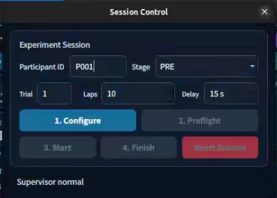
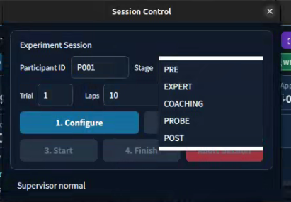

Dashboard & Overlay
The experimenter monitors the dashboard; the driver sees the same data in the overlay.같은 주행 데이터를 실험자는 대시보드에서, 운전자는 오버레이에서 확인합니다.
The dashboard and overlay update from the simulator’s live telemetry. Their values follow the current run, but sensor arrival times can differ; live synchronization does not mean every sensor was sampled at exactly the same instant.대시보드와 오버레이는 시뮬레이터의 주행 데이터를 실시간으로 수신해 갱신합니다. 현재 주행과 연동되지만 센서별 수신 시각에는 차이가 있으므로, 모든 값이 정확히 같은 순간에 측정됐다는 뜻은 아닙니다.
01 · Toolbar
Language and window controls change presentation. Joystick/Racing Wheel select the input stack, Stop stops it, and MAP opens the track view. Live data, session state and recording duration are distinct indicators.언어·창 버튼으로 표시 방식을 바꾸고, Joystick/Racing Wheel로 입력 프로그램을 선택합니다. Stop은 입력 프로그램을 중지하고 MAP은 트랙 화면을 엽니다. 실시간 데이터·세션 상태·기록 시간은 서로 다른 상태를 표시합니다.
02 · Experiment Session
Configure participant and stage, preflight, start or finish; Abort interrupts the session. This keeps experiment conditions attached to the recorded data.참가자·단계를 설정하고 사전 점검 후 기록을 시작·종료합니다. Abort는 세션을 중단합니다. 어떤 조건에서 수집한 기록인지 남기기 위해 마련한 영역입니다.
03 · Connection & Storage
Messages, file locations and quality status explain recording readiness. Live telemetry alone does not prove that session recording is ready.상태 메시지, 저장 위치, 품질 정보를 통해 기록 준비 상태를 확인합니다. 주행 데이터가 표시된다고 세션 기록까지 준비된 것은 아닙니다.
04 · Driving Readouts
Actual/target speed, Human/PP/Applied steering, collisions, laps and clearance show the immediate state before looking at trends.실제·목표 속도, Human/PP/Applied 조향, 충돌·랩·전방 거리를 한눈에 확인합니다. 그래프를 자세히 보기 전에 현재 상태를 파악하는 용도입니다.
05 · Time-Series Graphs
The speed plot reveals response lag and braking. Steering traces separate intended input, PP reference and applied command, exposing overshoot and repeated corrections.속도 그래프는 응답 지연과 감속 과정을, 조향 그래프는 사용자 입력·PP 기준·적용 명령의 차이를 보여 줍니다. 과도한 조향과 반복적인 수정도 확인할 수 있습니다.
06 · Input & Data Quality
Input/control details and packet/source ages help distinguish a driving issue from delayed or missing telemetry.입력·제어 상세 정보와 패킷·센서 수신 경과 시간으로 주행 문제인지 데이터 지연·누락인지 구분합니다.
1. Experiment Dashboard
Session Control
Set participant ID, stage, trial, target laps and departure delay. Configure, preflight, start and finish the recording.참가자 ID, 실험 단계, Trial(시도 번호), 목표 랩, 출발 대기 시간을 설정합니다. 사전 점검 후 기록을 시작하거나 종료할 수 있습니다.
Live Monitoring
Inspect actual/target speed, Human/PP/Applied steering, lap/collision counters and source freshness.실제·목표 속도와 Human/PP/Applied 조향값을 확인합니다. 랩·충돌 횟수와 데이터가 정상적으로 갱신되는지도 살펴볼 수 있습니다.
2. Overlay & Driving Panel
01 · Visibility & Windows
Opacity adjusts how much of the driving scene remains visible. MAP toggles the map view; the corner controls manage the overlay window.투명도로 주행 화면이 보이는 정도를 조절합니다. MAP으로 맵을 열고 닫으며, 모서리 버튼으로 오버레이 창을 조작합니다.
02 · Session & Control
Session opens the separate experiment dialog. Environment, authority and device indicators identify which setup is currently driving.Session으로 별도 실험 설정 창을 엽니다. 환경·제어 모드·입력 장치 표시로 현재 어떤 설정이 차량을 제어하는지 확인합니다.
03 · Speed & Steering
Speed and Target compare response with demand. Human/PP/Applied steering distinguishes driver intention, reference and executed command.Speed와 Target으로 실제 속도와 목표속도를 비교합니다. Human/PP/Applied 조향으로 운전자의 의도, 기준 조작, 최종 명령을 구분합니다.
04 · Lap & Clearance
Collision and lap counters track the run. Distance helps monitor forward clearance without opening the full dashboard.충돌·랩 수치로 주행 상태를 확인합니다. Distance는 전체 대시보드를 열지 않고 전방 여유 거리를 살펴보기 위한 표시입니다.
05 · Reference & Freshness
PP state and reference values show whether a reference is available. Packet/odometry ages and drops expose stale data; a visible number alone is not proof of a fresh reading.PP 상태와 기준값으로 비교 기준이 제공되는지 확인합니다. 패킷·위치 데이터 경과 시간과 누락 수는 오래된 데이터를 구분하는 데 사용합니다.
Why Separate the Driving Signals?
| Display | Signals | What it explains |
|---|---|---|
| Speed | Actual / Target / PP | Vehicle response, final speed demand and reference speed differ because of acceleration, braking and dynamics.실제 반응, 최종 목표속도, PP 기준속도를 비교합니다. 가속·제동·차량 동역학 때문에 세 값이 달라질 수 있습니다. |
| Steering | Human / PP / Applied | Driver intention, expert reference and final command need separate traces to identify who caused a correction.사용자 입력, PP 기준, 최종 명령을 분리해 어떤 입력이 조향 변화를 만들었는지 확인합니다. |
| Pedals / Throttle | Accelerator / Brake / Throttle | Pedal demand and vehicle throttle are not identical. The speed controller translates the demand into an applied throttle command.가속·브레이크 페달 입력과 차량의 스로틀 명령은 같은 값이 아닙니다. 속도 제어기가 사용자 요구를 차량 명령으로 변환합니다. |
The central panel groups speed, steering and throttle so the driver can read motion, direction and propulsion separately. Keeping source roles distinct also makes future coaching interventions auditable. PP currently supplies steering/speed references, not a measured pedal input.[5]중앙 패널은 속도·조향·스로틀을 나눠 차량의 빠르기, 진행 방향, 구동 명령을 따로 읽도록 구성했습니다. 각 값의 출처를 구분해 두면 향후 코칭이 어디에 개입했는지도 확인할 수 있습니다. 현재 PP가 제공하는 것은 조향·속도의 기준값이며, 측정된 페달 입력은 아닙니다.[5]
3. Reproducible Departure
Unassisted baseline초기 무보조 주행
PP reference calibrationPP 기준 주행 보정
Adaptive assistance적응형 주행 보조
Independent practice check훈련 중 독립 주행 확인
Unassisted outcome훈련 후 무보조 평가
PRE records initial manual driving; EXPERT records the autonomous reference. COACHING is planned assisted training, PROBE an unassisted check during training, and POST the final unassisted evaluation. Stage names define the study workflow; selecting COACHING does not activate an unimplemented policy.PRE는 초기 수동 주행, EXPERT는 자율 기준 주행을 기록합니다. COACHING은 보조 훈련, PROBE는 훈련 중 보조 없는 점검, POST는 훈련 후 최종 평가로 계획했습니다. 단계 이름은 실험 절차를 구분하며, COACHING 선택만으로 아직 구현되지 않은 정책이 동작하지는 않습니다.
A consistent reset and countdown give the driver time to move to the wheel before the vehicle is released. Readiness and release events are recorded so the start sequence can be checked separately from lap performance.차량을 초기화한 뒤 카운트다운 동안 기다리도록 해, 운전자가 휠 자리로 이동하고 출발을 준비할 시간을 확보합니다. 준비 완료와 출발 이벤트도 기록하므로 시작 절차와 랩 성능을 따로 확인할 수 있습니다.
Departure delay is configurable from 1 to 120 seconds (15 seconds by default).출발 대기 시간은 1~120초로 설정할 수 있으며 기본값은 15초입니다.
The start workflow resets the vehicle and run counters, holds motion during the countdown, and releases driving after readiness checks. The separate overlay session dialog hides after START is acknowledged.[5]기록 시작을 요청하면 차량과 주행 수치를 초기화하고, 카운트다운 동안 차량을 정지시킵니다. 준비 상태를 확인한 뒤 주행을 시작하며, 오버레이의 별도 세션 창은 시작 요청이 승인되면 자동으로 닫힙니다.[5]

